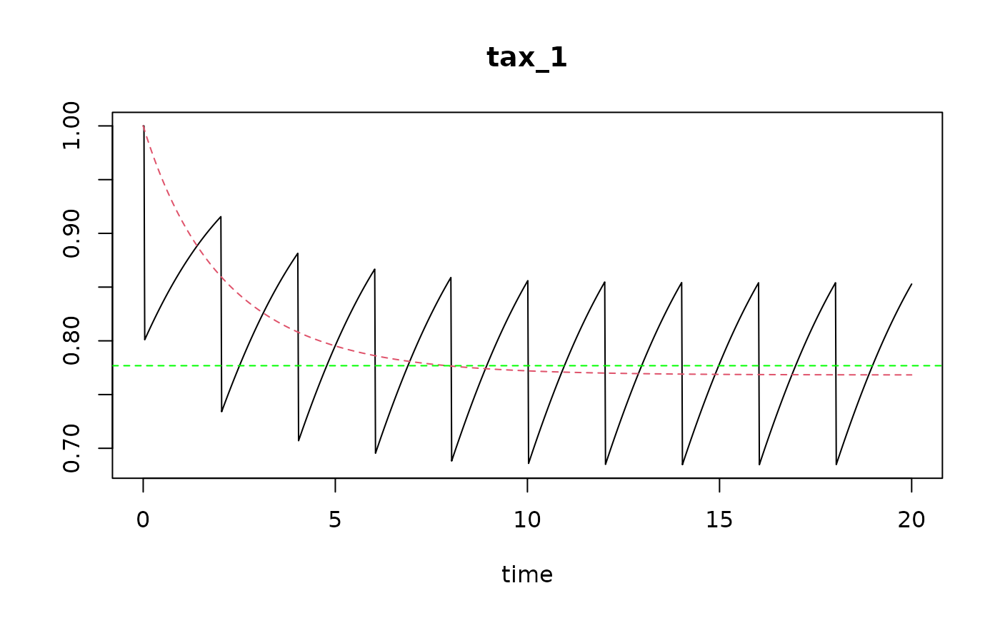

Estimate steady-state density for logistic and perturbation model for one and more metiers.
steadydensity.Rdsteady_perturb and steady_logistic calculate the steady-state density of taxa, based on their carrying capacity K, on the fishing intensity (swept area ratio, sar or mortality m), and on the species-specific parameters r and d (rate of increase and depletion fraction).
Usage
steady_perturb (K = 1, r = 1, d = 0.1,
parms = data.frame(K = K, r = r, d = d),
sar = 1, D0 = parms[["K"]], tol = 1e-06)
steady_metier (K = 1, r = 1,
parms = data.frame(K = K, r = r),
d = data.frame(0.1, 0.1), sar = data.frame(1, 2),
D0 = parms[["K"]], tol = 1e-06)
steady_logistic (K = 1, r = 1, m = 0.1,
parms = data.frame(K = K, r = r, m = m),
D0 = parms[["K"]], tol = 1e-06)Arguments
- sar
fishing intensity, estimated as Swept Area Ratio, units e.g. [m2/m2/year]. One number, or, (for steady_perturb) a vector of the same length as
density.- r
the rate of increase of each taxon, units e.g. [/year]. One number, or (for steady_perturb and steady_logistic) a vector.
- d
depletion fraction due to fishing. One number, or (for steady_perturb) a vector of same length as
r.- K
carrying capacity. One number, or (for steady_perturb and steady_logistic) a vector of same length as
r.- m
the mortality rate for the continous model; if NA, it will be estimated from sar, r, d and K; a vector of same length as
r.- parms
a data.frame with all parameters.
- D0
initial density. One number, or a vector of length = nrow(parms).
- tol
tolerance between which the steady-state solution needs to be estimated. Steady-state is assumed to be reached, if the successive values at 1/sar, Di and Di+1 differ less than atol + tol*Di+1, where atol is taken as 1e-10 (cannot be changed)
Value
for steady_perturb: returns a data.frame with
k, r, d, sar, D0, the input parameters,density_before, density_after, density before and after trawling at steady-state,density, the estimated densities, averaged over the trawling interval at steady-state,ntrawl, the number of trawls where this was attained,time, the time when steady-state was reached (within tol).
for steady_logistic: returns a data.frame with
k, r, m, D0, the input parameters,density, the estimated densities at steady-state,time, the time when steady-state was reached (within tol).
See also
run_perturb for how to run a disturbance model.
density_perturb for how to calculate densities of a model.
Traits_nioz, for trait databases in package Btrait.
MWTL for data sets on which fishing can be imposed.
map_key for simple plotting functions.
References
Hiddink, JG, Jennings, S, Sciberras, M, et al., 2019. Assessing bottom trawling impacts based on the longevity of benthic invertebrates. J Appl Ecol 56: 1075-1084. https://doi.org/10.1111/1365-2664.13278
Hiddink, Jan Geert, Simon Jennings, Marija Sciberras, Claire L. Szostek, Kathryn M. Hughes, Nick Ellis, Adriaan D. Rijnsdorp, Robert A. McConnaughey, Tessa Mazor, Ray Hilborn, Jeremy S. Collie, C. Roland Pitcher, Ricardo O. Amoroso, Ana M. Parma, Petri Suuronen, and Michel J. Kaiser, 2017. Global analysis of depletion and recovery of seabed biota after bottom trawling disturbance. Proc. Nat. Aca. Sci, 114 (31) 8301-8306. https://doi.org/10.1073/pnas.161885811.
C.R. Pitcher, N. Ellis, S. Jennings, J.G. Hiddink, T. Mazor, M.J.Kaiser, M.I. Kangas, R.A. McConnaughey, A.M. Parma, A.D. Rijnsdorp, P. Suuronen, J.S. Collie, R. Amoroso, K.M. Hughes and R. Hilborn, 2017. Estimating the sustainability of towed fishing-gearimpacts on seabed habitats: a simple quantitative riskassessment method applicable to data-limited fisheries. Methods in Ecology and Evolution,8,472-480doi: 10.1111/2041-210X.12705
Examples
## ====================================================
## Several inputs logistic model
## ====================================================
SL <- steady_logistic(r = 1,
K = 1,
m = seq(0.01, 0.5, length.out = 100),
tol = 1e-9)
## ====================================================
## Several inputs perturbation model
## ====================================================
S1 <- steady_perturb(r = 0.5,
d = 0.2,
K = 1,
sar = seq(0.1, 4, length.out = 100),
tol = 1e-9)
## - compare with analytic formula
# Steady-state density can also be estimated using this formula
# (from Pritchard, 2017): D = 1+ sar/r * log(1-d)
S1$DD <- with (S1, 1 + sar/r * log(1-d))
# The min and max density is also estimated with steady_perturb
with(S1, plot (sar, density))
with(S1, lines (sar, density_before, lty = 2))
with(S1, lines (sar, density_after, lty = 2))
with(S1, lines (sar, DD, col = 2))
legend("topright", pch = c(1, NA, NA, NA), lty = c(NA, 1, 2, 2),
col = c(1, 1, 1, 2),
legend = c("mean in interval", "before trawling",
"after trawling", "1+sar/r*log(1-d)"))
# random combinations
n <- 1000
S2 <- steady_perturb(r = runif(min = 0.5, max = 2, n = n),
d = runif(min = 0.01, max = 0.5, n = n),
K = runif(min = 0.1, max = 500, n = n),
sar = runif(min = 0, max = 4, n = n),
tol = 1e-9)
# Steady-state density can also be estimated using this formula
# (from Pritchard, 2017): D* = 1+ sar/r * log(1-d)
S2$DD <- with (S2, K*(1 + sar/r * log(1-d)))
with(S2, plot (density, pmax(0, DD),
xlab = "numeric",
ylab = "analytic formula (Pritchard 2017)",
main = "mean steady-state density"))
## ====================================================
## Compare steady-state solution with dynamic run
## ====================================================
# discrete parameter values and dynamic run
parms <- c(r = 0.5, d = 0.2, K = 1)
sar <- 0.5
times <- seq(from = 0, to = 20, length.out = 1000)
events <- seq(from = 10/365, to = 20, by = 1/sar)
run.discrete <- run_perturb(parms = parms,
times = times,
events = events)
# continuous simulation
# Estimate continous mortality equivalent with event fishing
m <- par_m(sar = sar,
r = parms["r"],
d = parms["d"],
K = parms["K"])
# new parameter vector with mortality
parms.c <- c(parms[c("r", "K")],
m = m)
run.continuous <- run_logistic(parms = parms.c,
times = times)
# show both simulations in one figure
plot(run.discrete, run.continuous)
# use steady_perturb to estimate the steady-state condition
std <- steady_perturb(r = 0.5,
d = 0.2,
K = 1,
sar = sar)
abline(h = std$density, lty = 2, col = "green")
